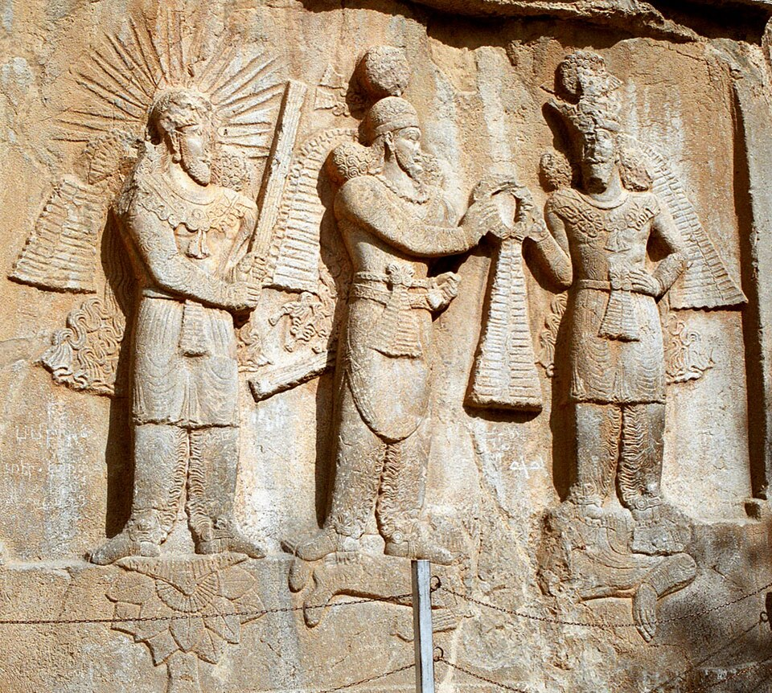
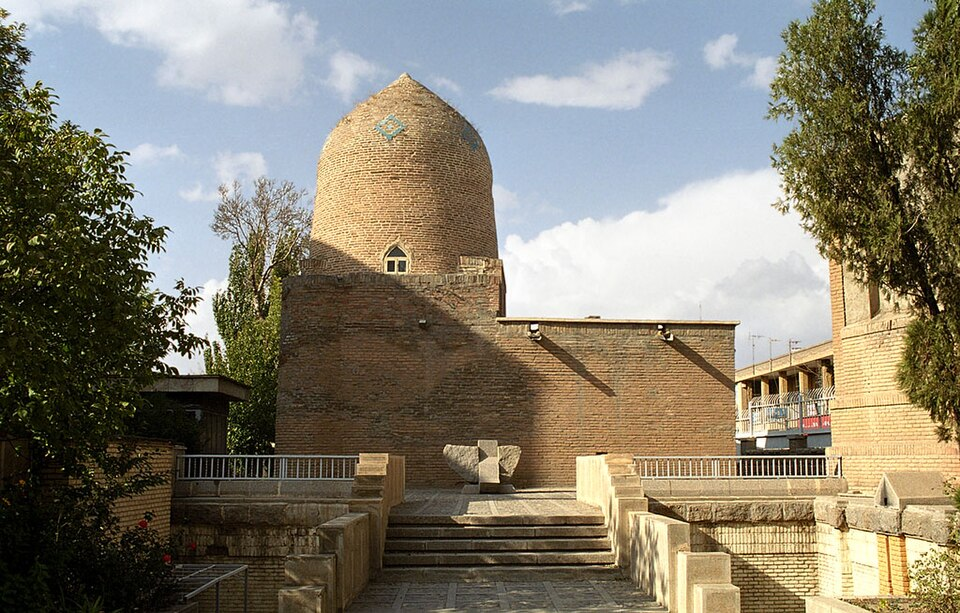
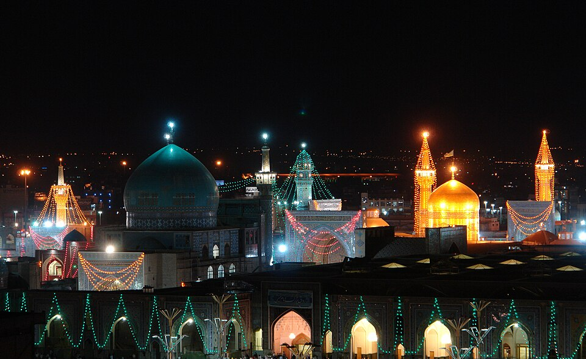

The Land That Kept Changing Its Gods
A fire that outlived everything

On the last Tuesday night before the Persian New Year, families across Iran still jump over little bonfires in the street. The festival is called Chaharshanbe Suri, and the New Year itself is Nowruz (literally "new day"). Here is the strange part: most of the people leaping over those flames are Muslims, doing something that is older than Islam by more than a thousand years. The fire, the atash, is a leftover from a much older Iranian world, kept alive inside a newer one.
That single picture is the whole story of religion in Iran. This is a land that changed its gods again and again, and yet never quite threw the old ones away. To understand it, you have to drop the idea that one religion simply "replaced" the last one, like swapping a battery. What really happened is messier, slower, and far more interesting.
Before there was a name for any of it

Long before anyone wrote "Iran," people on the Iranian plateau worshipped many gods. We know a little about them from the oldest layers of the sacred texts and from comparing them with the gods of ancient India, who were close cousins. There was Mithra (Mehr), tied to the sun, to light, and to keeping your promises; that is why in Persian today mehr can mean kindness or love. There were other powerful beings, some helpful, some frightening.
We should be honest right away about how much we don't know here. Ordinary people left almost no records of what they actually believed or prayed for. Kings carved their boasts into cliffs; farmers and shepherds carved nothing. So when we talk about "what ancient Iranians believed," we are mostly talking about what priests and rulers wanted preserved, which is not the same thing.
The prophet nobody can date

Then comes a man named Zarathustra, better known in the West as Zoroaster. He taught that above all the gods stood one wise creator, Ahura Mazda ("Wise Lord"), locked in a long struggle against a force of lies and disorder. People had a real job in that fight: choose good thoughts, good words, good deeds. Fire became the great symbol of that pure order, which is why Zoroastrian temples keep a flame burning. A flame, notice, that they honor, not a god they worship. Calling them "fire worshippers" is a slur from their enemies, not a description of what they do.
Now the genuine mystery, and it is a big one: we do not know when Zarathustra lived. This is not a fact someone forgot to look up. It is a real argument among serious scholars. One tradition puts him around 600 BCE, "258 years before Alexander." But the language of the oldest hymns, the Gathas, looks so ancient that many specialists push him far earlier, somewhere between 1500 and 1000 BCE. That is a gap of nearly a thousand years. We cannot close it. Anyone who hands you a confident single date for Zoroaster is guessing and not saying so.
Were the famous kings even Zoroastrian?
Here is another place where the popular story runs ahead of the evidence. We often hear that the great Persian kings, the Achaemenids, were Zoroastrians. Their inscriptions do praise Ahura Mazda; Darius the Great credits that god with his victories on the giant cliff carving at Behistun. But the word "Zoroaster" never appears, and the kings do things a strict Zoroastrian might frown at. So historians genuinely disagree: were they full Zoroastrians, looser worshippers of Ahura Mazda, or something we don't have a clean label for? The careful answer is "we're not sure," and that is more honest than the textbook's tidy yes.
What the kings did do is more interesting than what they believed. When Cyrus took Babylon in 539 BCE, he let captive peoples and their gods go home. Among them were Jews who had been deported from Jerusalem. That is why the Hebrew Bible remembers Cyrus warmly. But be careful: Cyrus was not inventing religious tolerance as a principle. Letting local temples reopen was smart imperial management, the normal playbook of a clever conqueror. The result was good for the Jews; the motive was power.
The Jewish community that stayed

Here is something most people never hear: when Cyrus let the exiles go home, many of them chose not to. They had built lives in the Persian world, and they stayed. That decision started one of the oldest continuous Jewish communities on earth, living on Iranian soil for roughly 2,500 years, straight through every change of religion that came after. There are still Jews in Iran today.
This community did something huge for Judaism as a whole. Centuries later, under the Persian Sasanian empire, Jewish scholars in great academies (at towns like Sura and Pumbedita, in what is now Iraq but was then Persian land) compiled the Babylonian Talmud, finished roughly around 500 to 600 CE. It became the central text of Jewish law and learning for the next fifteen hundred years. One of the most important books in all of Judaism was assembled under Persian rule.
The shrine pictured here is named for the heroes of the Book of Esther, a story set in the Persian court at Susa. And here the historian has to be honest: most scholars read Esther not as a diary of real events but as a kind of historical novella, a gripping tale built on a Persian backdrop, written partly to explain the festival of Purim. The building in Hamadan is a real and beloved holy place; whether Esther and Mordechai themselves lived is a separate question, and the careful answer is "we don't know." A shrine can be completely real even when the story behind it is mostly legend. Both things are true at once.
When a religion becomes a government

Centuries later, a new Persian dynasty, the Sasanians (from 224 CE), did something the earlier kings had not: they tied Zoroastrianism tightly to the state, almost like an official church. We can actually hear one of the men who pushed this, a powerful priest named Kartir, because he left his own inscriptions bragging about it. He boasts of building up the fires and the priesthood, and of striking at Jews, Christians, Buddhists, Hindus, and others. It is a rare thing: a priest's own words, telling us he used the empire's muscle against rival faiths. Christianity, all the same, took root in Iran in these early centuries and never left.
This was also the age of two bold challengers. A man named Mani (born around 216 CE) founded a whole new religion, Manichaeism, blending ideas from Zoroastrianism, Christianity, and beyond into one vision of light trapped in darkness. It spread astonishingly far, reaching the Roman world and, later, China. The Sasanian state eventually turned on him, and Mani died in prison around 274 CE. Later, a reformer named Mazdak preached something that sounded almost revolutionary, including sharing wealth more equally; his movement was crushed in the early 500s. We should add a caution here too: much of what we "know" about Mazdak comes from people who hated him, so the picture may be unfair. The lesson repeats: who wrote the source matters as much as what the source says.
The conquest that took centuries
In the 630s and 640s CE, Arab Muslim armies defeated the Sasanian empire in a few sharp battles. The empire fell fast. Here is the trap almost every textbook falls into: it then says "and Iran became Muslim," as if the two happened together.
They did not. The state collapsed quickly; the people converted slowly. The historian Richard Bulliet, studying patterns in names and records, argues that most Iranians did not become Muslim until the 800s, 900s, and even later, generations after the soldiers had come and gone. For a long time Zoroastrians, Christians, and Jews remained large parts of the population under Muslim rule. Conquest and conversion ran on two completely different clocks, and confusing them erases the millions of people who kept their old faith for centuries.
And the old world did not simply vanish. The Persian language came back, now written in Arabic letters, carrying the old stories forward in poems like Ferdowsi's Shahnameh. Nowruz survived. The fire kept burning, just in a new house.
The year Iran was made Shi'i

If you ask most people today, they will tell you Iran is a Shi'i Muslim country, as if it always was. It was not. For its first 800 years of Islam, Iran was mostly Sunni, the larger branch of Islam.
That changed by decision, not by destiny. In 1501 a teenage ruler named Shah Ismail founded the Safavid dynasty and made Twelver Shi'ism the official religion, then spread it, sometimes by force, over the next hundred years. So Iran's Shi'i majority is roughly 500 years old, the product of a deliberate state project. Something that feels timeless about the country actually has a start date and a policy behind it.
The newest faith, born in Iran

Religion in Iran did not stop making new branches. In the 1800s, in the Qajar period, a movement grew that became the Baha'i Faith, which teaches the unity of all religions. It began with a young man in Shiraz, known as the Báb, whose house above became one of the faith's holiest places. Its followers are now the largest non-Muslim religious minority in Iran, and they have also been among the most harshly persecuted, then and now. Their story is a reminder that this history is not safely "over"; it is still being argued and still being lived.
Why the fire still matters
So count them: old Iranian gods, Zoroaster's Ahura Mazda, the kings' Mazda-worship, Mithra, Mani's light, Mazdak's hope, Judaism, Christianity, the slow arrival of Sunni Islam, the Safavid turn to Shi'ism, and the Baha'i Faith. One plateau wore all of them, and traces of each survived into the next.
That is the real shape of religion in Iran. Not a staircase where each faith replaces the last, but a braid, where the old threads keep showing through the new ones. When your family lights a fire at Nowruz, you are holding one of the oldest threads in your hand. You don't have to believe what the ancient priests believed to feel why they thought fire was worth keeping lit.
A note on how we know this, and what we don't
Two honest reminders. First, the biggest unsolved puzzle above is real: nobody can firmly date Zoroaster, and the guesses span almost a thousand years. Second, much of what we say about ancient beliefs comes from kings, priests, and enemies, the people who could write or carve. The ordinary believer, the village, the woman at the hearth, mostly left silence. When you read confident sentences about "what Iranians believed," always ask the historian's favorite question: who is telling me this, and what did they want?
Sources
These are the kinds of works historians actually rely on, so you can check anything above:
- Encyclopaedia Iranica (iranicaonline.org), peer-reviewed entries, especially "Zoroaster" (on the dating debate), "Achaemenid Religion," "Kartir," "Mani," "Mazdak," and "Conversion to Islam."
- Mary Boyce, Zoroastrians: Their Religious Beliefs and Practices, the standard introduction, including the argument for a very early Zarathustra.
- Prods Oktor Skjærvø, The Spirit of Zoroastrianism, on the texts and the limits of what they tell us.
- Touraj Daryaee, Sasanian Persia: The Rise and Fall of an Empire, on the Sasanian state, Kartir, Mani, and Mazdak.
- Richard W. Bulliet, Conversion to Islam in the Medieval Period, the classic argument that Iran's conversion was slow.
- Amelie Kuhrt, The Persian Empire (sources in translation), and Pierre Briant, From Cyrus to Alexander, on the Achaemenids and Cyrus in Babylon.
- Michael Axworthy, A History of Iran: Empire of the Mind, a readable single-volume overview (good for shape; check specifics against Iranica).